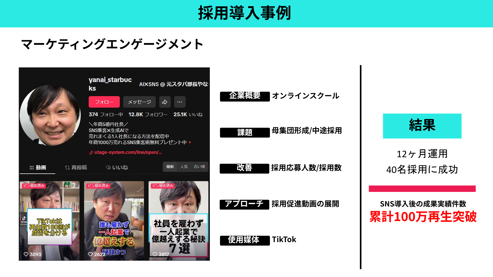
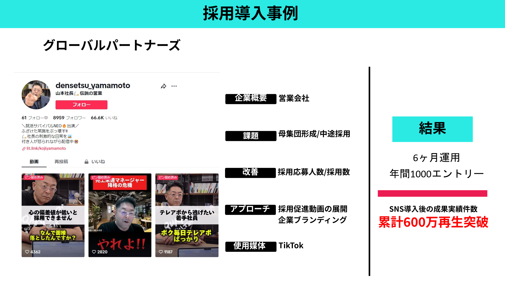
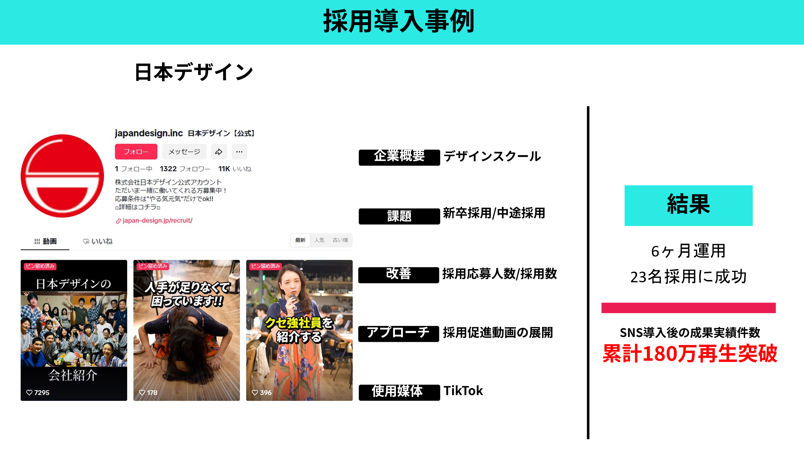
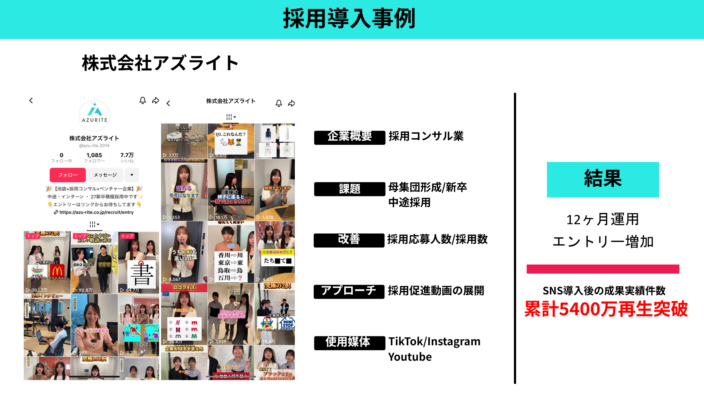
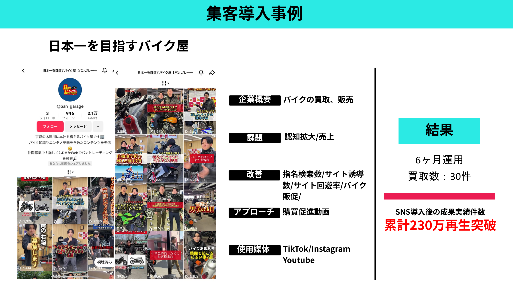

ISSUE / 01
採用単価の高騰
求人媒体・人材紹介・広告 — 採用1人あたりのコストが年々上昇している。
A RECRUITING BRANDING PROGRAM
採用ブランディング動画 SNS
採用単価削減・定着率向上・母集団形成・モチベーション低下
4つの課題を、一本の動画で同時に解く。
2億再生を超えた制作実績
株式会社 TSUTA-WORLD
ISSUE
4つの課題を、「動画 × SNS × LINE」の掛け合わせで同時に解決します。
ISSUE / 01
求人媒体・人材紹介・広告 — 採用1人あたりのコストが年々上昇している。
ISSUE / 02
入社前と現場のギャップ、早期離職 — 採用工数が積み重なるほど効率は落ちる。
ISSUE / 03
既存媒体だけでは届かない潜在層への接触 — 母集団自体の薄さが顕在化している。
ISSUE / 04
多拠点・部署間の情報分断 — 帰属意識と一体感が弱まりやすい構造に。
WORKS
導入企業の成果を、一件ずつご覧ください。
CASE 01

採用導入事例
オンラインスクール ／ TikTok
40名採用12ヶ月運用 累計100万再生
CASE 02

採用導入事例
営業会社 ／ TikTok
年間1000エントリー6ヶ月運用 累計600万再生
CASE 03

採用導入事例
デザインスクール ／ TikTok
23名採用6ヶ月運用 累計180万再生
CASE 04

採用導入事例
採用コンサル ／ TikTok・Instagram・YouTube
エントリー増加12ヶ月運用 累計5400万再生
CASE 05

集客導入事例
バイク買取・販売 ／ TikTok・Instagram・YouTube
買取 30件6ヶ月運用 累計230万再生
PRODUCTION STYLE
再生数より、再生の質。
私たちは、再生数を追いません。
2億再生を超えた経験から気づいたのは、「相性のいい人に、深く届くか」が採用の成否を決めるということ。
意味のない100万再生より、意味のある1再生。
だから私たちは、MVVを意識した「安定志向の堅い制作」にこだわります。炎上リスクのあるエンタメ制作は、行いません。
バズではなく、ファン。それがファンステップ採用の思想です。
私たちの想いはただ一つです。企業と求職者のミスマッチをなくし、求職者の人生が豊かになり、企業が円滑に成長できる。そんな採用の未来を、動画でつくっていきます。
PROPOSAL
ご提案の全体像
01 FOR APPLICANTS · LINE｜顕在層向け
応募者を継続フォローし、「貴社のファン」に育てる。
合説・求人サイト・面接済みの応募者をLINEで繋ぎ、週1ペースで動画を自動配信。単純接触が増えるほど好感度が高まり、内定辞退を防ぎ、入社後のミスマッチを軽減する。
出会いの全接点で、LINEで掴み、動画で離さない。
02 FOR EMPLOYEES · INNER｜従業員向け
「動画版・社内メルマガ」で、帰属意識と採用ブランドを同時に構築する。
社長×社員トーク、社員インタビュー、多拠点紹介——作った動画が社内の一体感をつくり、そのまま求職者向けコンテンツに転用できる。
1本の動画が、内と外に同時に効く。
03 FOR LATENT · SNS｜潜在層向け
バズ狙いではなく、「相性のいい人材」に届く。アルゴリズム活用型の認知設計。
SNSは母集団形成のツールではありません。TikTok・Instagram・YouTubeのアルゴリズムを活用し、まだ転職を考えていない潜在層に、自然に・継続的に届ける仕組みをつくります。
VIDEO ASSETS
TYPICAL · PAID MEDIA
掲載を止めた瞬間、消える。毎月お金を払い続ける構造。資産にならない。
OURS · VIDEO ASSETS
作った動画は止めても残り、再生され続ける。積み上げるほど強くなる、会社の採用資産になる。
EXPECTED EFFECTS
01 SOCIAL MOTIVATION
社員間・拠点間の情報共有で、帰属意識が高まる。経営者との距離感が近くなる。
02 RETENTION
LINEステップ配信と職場リアル動画で、入社前から会社理解が深まり、早期離職要因を事前に排除。
03 REACH & QUALITY
SNSアルゴリズムを通じた潜在求職者へのリーチで、これまで接点のなかった人材層へのアプローチが可能に。
RESULT｜社員・求職者・潜在層の3者に対して、1つの動画制作投資から最大のリターンを生み出します。
CONTACT
サービスのお申し込み・ご質問は、下記フォームよりお送りください。